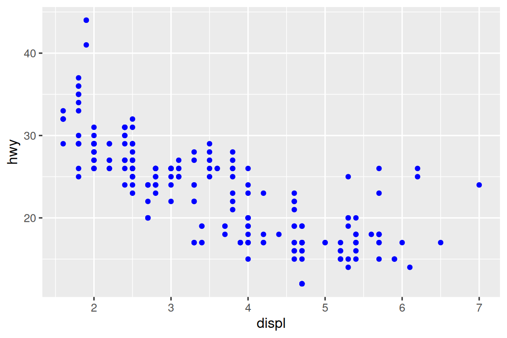

9 Capas
9.1 Introducción
En Capítulo 1, aprendió mucho más que solo cómo hacer diagramas de dispersión, gráficos de barras y diagramas de caja. Aprendiste una base que puedes usar para hacer cualquier tipo de gráfico con ggplot2.
En este capítulo, ampliará esa base a medida que aprenda sobre la gramática en capas de los gráficos. Comenzaremos con una inmersión más profunda en mapeos estéticos, objetos geométricos y facetas. Luego, aprenderá sobre las transformaciones estadísticas que ggplot2 hace bajo el capó al crear un gráfico. Estas transformaciones se utilizan para calcular nuevos valores para graficar, como las alturas de las barras en un diagrama de barras o las medianas en un diagrama de caja. También aprenderá sobre los ajustes de posición, que modifican cómo se muestran los geoms en sus gráficos. Finalmente, presentaremos brevemente los sistemas de coordenadas.
No cubriremos todas las funciones y opciones para cada una de estas capas, pero lo guiaremos a través de la funcionalidad más importante y de uso común proporcionada por ggplot2 y le presentaremos los paquetes que amplían ggplot2.
9.1.1 Requisitos previos
Este capítulo se centra en ggplot2. Para acceder a los conjuntos de datos, las páginas de ayuda y las funciones utilizadas en este capítulo, cargue tidyverse ejecutando este código:
9.2 Asignaciones de aesthetic
“El mayor valor de una imagen es cuando nos obliga a notar lo que nunca esperábamos ver.” — John Tukey
Recuerde que el marco de datos mpg incluido con el paquete ggplot2 contiene observaciones 234 en modelos de automóviles 38.
mpg
#> # A tibble: 234 × 11
#> manufacturer model displ year cyl trans drv cty hwy fl
#> <chr> <chr> <dbl> <int> <int> <chr> <chr> <int> <int> <chr>
#> 1 audi a4 1.8 1999 4 auto(l5) f 18 29 p
#> 2 audi a4 1.8 1999 4 manual(m5) f 21 29 p
#> 3 audi a4 2 2008 4 manual(m6) f 20 31 p
#> 4 audi a4 2 2008 4 auto(av) f 21 30 p
#> 5 audi a4 2.8 1999 6 auto(l5) f 16 26 p
#> 6 audi a4 2.8 1999 6 manual(m5) f 18 26 p
#> # ℹ 228 more rows
#> # ℹ 1 more variable: class <chr>Entre las variables en mpg están:
displ: Tamaño del motor de un automóvil, en litros. Una variable numérica.hwy: La eficiencia de combustible de un automóvil en la carretera, en millas por galón (mpg). Un automóvil con una eficiencia de combustible baja consume más combustible que un automóvil con una eficiencia de combustible alta cuando recorren la misma distancia. Una variable numérica.class: Tipo de coche. Una variable categórica.
Comencemos visualizando la relación entre displ y hwy para varias clases de autos. Podemos hacer esto con un diagrama de dispersión donde las variables numéricas se asignan a la estética x e y y la variable categórica se asigna a una estética como color o shape.
# Izquierda
ggplot(mpg, aes(x = displ, y = hwy, color = class)) +
geom_point()
# Derecha
ggplot(mpg, aes(x = displ, y = hwy, shape = class)) +
geom_point()
#> Warning: The shape palette can deal with a maximum of 6 discrete values because more
#> than 6 becomes difficult to discriminate
#> ℹ you have requested 7 values. Consider specifying shapes manually if you
#> need that many have them.
#> Warning: Removed 62 rows containing missing values or values outside the scale range
#> (`geom_point()`).![Dos diagramas de dispersión uno al lado del otro, ambos visualizando la eficiencia de combustible en carretera versus el tamaño del motor de los automóviles y mostrando una asociación negativa. En el gráfico de la izquierda, la variable clase (class) se asigna a la aesthetic color, dando como resultado diferentes colores para cada clase. En la gráfica de la derecha la variable clase (class) se asigna a la aesthetic shape, dando como resultado diferentes formas de caracteres de trazado para cada clase, excepto todoterreno. Cada gráfico viene con una leyenda que muestra el mapeo entre color o shape y los niveles de la variable clase (class).](layers_files/figure-html/unnamed-chunk-4-1.png)
![Dos diagramas de dispersión uno al lado del otro, ambos visualizando la eficiencia de combustible en carretera versus el tamaño del motor de los automóviles y mostrando una asociación negativa. En el gráfico de la izquierda, la variable clase (class) se asigna a la aesthetic color, dando como resultado diferentes colores para cada clase. En la gráfica de la derecha la variable clase (class) se asigna a la aesthetic shape, dando como resultado diferentes formas de caracteres de trazado para cada clase, excepto todoterreno. Cada gráfico viene con una leyenda que muestra el mapeo entre color o shape y los niveles de la variable clase (class).](layers_files/figure-html/unnamed-chunk-4-2.png)
Cuando class se asigna a shape, recibimos dos advertencias:
1: The shape palette can deal with a maximum of 6 discrete values because more than 6 becomes difficult to discriminate; you have 7. Consider specifying shapes manually if you must have them.
2: Removed 62 rows containing missing values (
geom_point()).
Dado que ggplot2 solo usará seis formas a la vez, de manera predeterminada, los grupos adicionales no se trazarán cuando use la aesthetic shape. La segunda advertencia está relacionada: hay 62 SUV (todoterrenos) en el conjunto de datos y no están representados.
De manera similar, también podemos mapear la estética class a size o alpha, que controlan el tamaño y la transparencia de los puntos, respectivamente.
# Izquierda
ggplot(mpg, aes(x = displ, y = hwy, size = class)) +
geom_point()
#> Warning: Using size for a discrete variable is not advised.
# Derecha
ggplot(mpg, aes(x = displ, y = hwy, alpha = class)) +
geom_point()
#> Warning: Using alpha for a discrete variable is not advised.![Dos diagramas de dispersión uno al lado del otro, ambos visualizando la eficiencia de combustible en carretera versus el tamaño del motor de los automóviles y mostrando una asociación negativa. En el gráfico de la izquierda, la clase (class) se asigna a la aesthetic size, dando como resultado diferentes tamaños para cada clase. En la gráfica de la derecha clase (class) se asigna a la aesthetic alpha, resultando en diferentes niveles alpha (transparencia) para cada clase. Cada gráfica viene con una leyenda que muestra el mapeo entre el tamaño o nivel alfa y niveles de la variable de clase (class).](layers_files/figure-html/unnamed-chunk-5-1.png)
![Dos diagramas de dispersión uno al lado del otro, ambos visualizando la eficiencia de combustible en carretera versus el tamaño del motor de los automóviles y mostrando una asociación negativa. En el gráfico de la izquierda, la clase (class) se asigna a la aesthetic size, dando como resultado diferentes tamaños para cada clase. En la gráfica de la derecha clase (class) se asigna a la aesthetic alpha, resultando en diferentes niveles alpha (transparencia) para cada clase. Cada gráfica viene con una leyenda que muestra el mapeo entre el tamaño o nivel alfa y niveles de la variable de clase (class).](layers_files/figure-html/unnamed-chunk-5-2.png)
Ambos producen advertencias también:
Using alpha for a discrete variable is not advised.
Asignar una variable discreta (categórica) no ordenada (class) a una aesthetic ordenada (size o alpha) generalmente no es una buena idea porque implica una clasificación que de hecho no existe.
Una vez que mapeas una aesthetic, ggplot2 se encarga del resto. Selecciona una escala razonable para usar con la aesthetic y construye una leyenda que explica el mapeo entre niveles y valores. Para las aesthetics x e y, ggplot2 no crea una leyenda, pero crea una línea de eje con marcas y una etiqueta. La línea del eje proporciona la misma información que una leyenda; explica el mapeo entre ubicaciones y valores.
También puede establecer las propiedades visuales de su geom manualmente como un argumento de su función geom (fuera de aes()) en lugar de depender de un mapeo de variables para determinar la apariencia. Por ejemplo, podemos hacer que todos los puntos de nuestro gráfico sean azules:
ggplot(mpg, aes(x = displ, y = hwy)) +
geom_point(color = "blue")
Aquí, el color no transmite información sobre una variable, sino que solo cambia la apariencia de la gráfica. Deberá elegir un valor que tenga sentido para esa estética:
- El nombre de un color como una cadena de caracteres, por ejemplo,
color = "blue". - El tamaño de un punto en mm, por ejemplo,
size = 1. - La forma de un punto como un número, por ejemplo,
shape = 1, como se muestra en Figura 9.1.
![Mapeo entre formas y los números que las representan: 0 - cuadrado hueco, 1 - círculo hueco, 2 - triángulo hueco apuntando hacia arriba, 3 - símbolo de adición, 4 - cruz, 5 - rombo hueco, 6 - triángulo hueco apuntando hacia abajo, 7 - cruz en un cuadrado, 8 - asterisco, 9 - símbolo de adición en un rombo, 10 - símbolo de adición en un círculo, 11 - triángulos hacia arriba y hacia abajo huecos, 12 - símbolo de adición en un cuadrado, 13 - cruz superpuesta a un círculo, 14 - cuadrado y triángulo apuntando hacia arriba, 15 - cuadrado relleno, 16 - círculo relleno, 17 - triángulo relleno apuntando hacia arriba, 18 - rombo relleno, 19 - círculo relleno, 20 - viñeta (círculo más pequeño), 21 - círculo con relleno y borde, 22 - cuadrado con relleno y borde, 23 - rombo con relleno y borde, 24 - triángulo apuntando hacia arriba con relleno y borde, 25 - triángulo apuntando hacia abajo con relleno y borde.](layers_files/figure-html/fig-shapes-1.png)
color y fill. Las formas huecas (0–14) tienen un borde determinado por color; las formas sólidas (15–20) se rellenan con color; las formas rellenas (21–25) tienen un borde de color y se rellenan con fill. Las formas se organizan para mantener formas similares una al lado de la otra..
Hasta ahora hemos discutido la estética que podemos mapear o establecer en un diagrama de dispersión, cuando usamos un geom_point. Puede obtener más información sobre todas las asignaciones estéticas posibles en la viñeta de especificaciones estéticas en https://ggplot2.tidyverse.org/articles/ggplot2-specs.html.
La estética específica que puede usar para una gráfica depende de la geom que use para representar los datos. En la siguiente sección profundizaremos en las geomas.
9.2.1 Ejercicios
Cree un diagrama de dispersión de
hwyvs.displdonde los puntos son triángulos rellenos de rosa.-
¿Por qué el siguiente código no dio como resultado un gráfico con puntos azules?
ggplot(mpg) + geom_point(aes(x = displ, y = hwy, color = "blue")) ¿Qué hace la estética
stroke? ¿Con qué formas trabaja? (Pista: usa?geom_point)¿Qué sucede si asigna una estética a algo que no sea un nombre de variable, como
aes (color = displ < 5)? Tenga en cuenta que también deberá especificar x e y.
9.3 Objetos geométricos
¿En qué se parecen estas dos gráficas?
Ambas gráficas contienen la misma variable x, la misma variable y, y ambas describen los mismos datos. Pero las gráficas no son idénticas. Cada gráfico utiliza un objeto geométrico diferente, geom, para representar los datos. La gráfica de la izquierda usa geom_point, y la gráfica de la derecha usa geom_smooth, una línea suave ajustada a los datos.
Para cambiar la geom en su gráfico, cambie la función geom que agrega a ggplot(). Por ejemplo, para hacer los diagramas de arriba, puedes usar el siguiente código:
# Izquierda
ggplot(mpg, aes(x = displ, y = hwy)) +
geom_point()
# Derecha
ggplot(mpg, aes(x = displ, y = hwy)) +
geom_smooth()
#> `geom_smooth()` using method = 'loess' and formula = 'y ~ x'Cada función geom en ggplot2 toma un argumento mapping, definido localmente en la capa geom o globalmente en la capa ggplot(). Sin embargo, no todas las estéticas funcionan con todas las geom. Puede establecer la forma de un punto, pero no puede establecer la “forma” de una línea. Si lo intenta, ggplot2 ignorará silenciosamente ese mapeo estético. Por otro lado, podría establecer el tipo de línea de una línea. geom_smooth() dibujará una línea diferente, con un tipo de línea diferente, para cada valor único de la variable que asignas al tipo de línea.
# Izquierda
ggplot(mpg, aes(x = displ, y = hwy, shape = drv)) +
geom_smooth()
# Derecha
ggplot(mpg, aes(x = displ, y = hwy, linetype = drv)) +
geom_smooth()Aquí, geom_smooth() separa los autos en tres líneas según su valor drv, que describe el tren de transmisión de un auto. Una línea describe todos los puntos que tienen un valor 4, una línea describe todos los puntos que tienen un valor f y una línea describe todos los puntos que tienen un valor r. Aquí, 4 significa tracción en las cuatro ruedas, f para tracción delantera y r para tracción trasera.
Si esto suena extraño, podemos hacerlo más claro superponiendo las líneas sobre los datos sin procesar y luego coloreando todo de acuerdo con drv.
ggplot(mpg, aes(x = displ, y = hwy, color = drv)) +
geom_point() +
geom_smooth(aes(linetype = drv))
Observe que este gráfico contiene dos geomas en el mismo gráfico.
Muchos geoms, como geom_smooth(), utilizan un único objeto geométrico para mostrar varias filas de datos. Para estos geoms, puede establecer la estética group en una variable categórica para dibujar múltiples objetos. ggplot2 dibujará un objeto separado para cada valor único de la variable de agrupación. En la práctica, ggplot2 agrupará automáticamente los datos de estos geoms siempre que asigne una estética a una variable discreta (como en el ejemplo de linetype). Es conveniente confiar en esta característica porque la estética group por sí misma no agrega una leyenda o características distintivas a las geomas.
# Izquierda
ggplot(mpg, aes(x = displ, y = hwy)) +
geom_smooth()
# Centro
ggplot(mpg, aes(x = displ, y = hwy)) +
geom_smooth(aes(group = drv))
# Derecha
ggplot(mpg, aes(x = displ, y = hwy)) +
geom_smooth(aes(color = drv), show.legend = FALSE)![Tres gráficas, cada una con eficiencia de combustible en carretera en el eje y y el tamaño del motor de los automóviles en el eje x, donde los datos se representan mediante una curva suave. La primera gráfica solo tiene estas dos variables, la gráfica central tiene tres curvas para cada nivel de tren de transmisión, y la gráfica de la derecha no solo tiene las mismas tres curvas suaves separadas para cada nivel del tren de transmisión, también se trazan las curvas en diferentes colores, con una leyenda que explica qué color se asigna a qué nivel. También se muestran los intervalos de confianza alrededor de las curvas suavizadas.](layers_files/figure-html/unnamed-chunk-13-1.png)
![Tres gráficas, cada una con eficiencia de combustible en carretera en el eje y y el tamaño del motor de los automóviles en el eje x, donde los datos se representan mediante una curva suave. La primera gráfica solo tiene estas dos variables, la gráfica central tiene tres curvas para cada nivel de tren de transmisión, y la gráfica de la derecha no solo tiene las mismas tres curvas suaves separadas para cada nivel del tren de transmisión, también se trazan las curvas en diferentes colores, con una leyenda que explica qué color se asigna a qué nivel. También se muestran los intervalos de confianza alrededor de las curvas suavizadas.](layers_files/figure-html/unnamed-chunk-13-2.png)
![Tres gráficas, cada una con eficiencia de combustible en carretera en el eje y y el tamaño del motor de los automóviles en el eje x, donde los datos se representan mediante una curva suave. La primera gráfica solo tiene estas dos variables, la gráfica central tiene tres curvas para cada nivel de tren de transmisión, y la gráfica de la derecha no solo tiene las mismas tres curvas suaves separadas para cada nivel del tren de transmisión, también se trazan las curvas en diferentes colores, con una leyenda que explica qué color se asigna a qué nivel. También se muestran los intervalos de confianza alrededor de las curvas suavizadas.](layers_files/figure-html/unnamed-chunk-13-3.png)
Si coloca asignaciones en una función geom, ggplot2 las tratará como asignaciones locales para la capa. Utilizará estas asignaciones para extender o sobrescribir las asignaciones globales solo para esa capa. Esto hace posible mostrar diferentes estéticas en diferentes capas.
ggplot(mpg, aes(x = displ, y = hwy)) +
geom_point(aes(color = class)) +
geom_smooth()Puede usar la misma idea para especificar datos diferentes para cada capa. Aquí, usamos puntos rojos y círculos abiertos para resaltar los autos de dos plazas. El argumento de datos locales en geom_point() anula el argumento de datos globales en ggplot() solo para esa capa.
ggplot(mpg, aes(x = displ, y = hwy)) +
geom_point() +
geom_point(
data = mpg |> filter(class == "2seater"),
color = "red"
) +
geom_point(
data = mpg |> filter(class == "2seater"),
shape = "circle open", size = 3, color = "red"
)Las geomas son los bloques de construcción fundamentales de ggplot2. Puede transformar por completo el aspecto de su gráfico cambiando su geom, y diferentes geoms pueden revelar diferentes características de sus datos. Por ejemplo, el histograma y el diagrama de densidad a continuación revelan que la distribución del kilometraje en carretera es bimodal y sesgada hacia la derecha, mientras que el diagrama de caja revela dos posibles valores atípicos.
# Izquierda
ggplot(mpg, aes(x = hwy)) +
geom_histogram(binwidth = 2)
# Centro
ggplot(mpg, aes(x = hwy)) +
geom_density()
# Derecha
ggplot(mpg, aes(x = hwy)) +
geom_boxplot()ggplot2 proporciona más de 40 geoms, pero estos no cubren todos los gráficos posibles que uno podría hacer. Si necesita un geom diferente, le recomendamos que busque primero en los paquetes de extensión para ver si alguien más ya lo ha implementado (vea https://exts.ggplot2.tidyverse.org/gallery/ para ver una muestra). Por ejemplo, el paquete ggridges (https://wilkelab.org/ggridges) es útil para hacer gráficos de líneas de crestas, que pueden ser útiles para visualizar la densidad de una variable numérica para diferentes niveles de una variable categórica. En la siguiente gráfica, no solo usamos un nuevo geom (geom_density_ridges()), sino que también asignamos la misma variable a múltiples estéticas (drv a y, fill y color) así como establecer una estética (alpha = 0.5) para hacer que las curvas de densidad sean transparentes.
library(ggridges)
ggplot(mpg, aes(x = hwy, y = drv, fill = drv, color = drv)) +
geom_density_ridges(alpha = 0.5, show.legend = FALSE)
#> Picking joint bandwidth of 1.28El mejor lugar para obtener una descripción completa de todos los geoms que ofrece ggplot2, así como de todas las funciones del paquete, es la página de referencia: https://ggplot2.tidyverse.org/reference. Para obtener más información sobre cualquier geom individual, use la ayuda (por ejemplo, ? geom_smooth).
9.3.1 Ejercicios
¿Qué geom usarías para dibujar un gráfico de líneas? ¿Un diagrama de caja? ¿Un histograma? ¿Un gráfico de áreas?
-
Anteriormente en este capítulo usamos
show.legendsin explicarlo:ggplot(mpg, aes(x = displ, y = hwy)) + geom_smooth(aes(color = drv), show.legend = FALSE)¿Qué hace
show.legend = FALSEaquí? ¿Qué pasa si lo quitas? ¿Por qué crees que lo usamos antes? ¿Qué hace el argumento
separageom_smooth()?-
Vuelva a crear el código R necesario para generar los siguientes gráficos. Tenga en cuenta que siempre que se use una variable categórica en el gráfico, es
drv.![Hay seis diagramas de dispersión en esta figura, dispuestos en una cuadrícula de 3x2. En todas las gráficas, la eficiencia de combustible de los automóviles en carretera está en el eje y y el tamaño del motor está en el eje x. La primera gráfica muestra todos los puntos en negro con una suave curva superpuesta sobre ellos. En la segunda gráfica los puntos son también negros, con curvas suaves superpuestas separadas para cada nivel de tren de transmisión. En la tercera gráfica, los puntos y las curvas suaves son representados en diferentes colores para cada nivel de tren de transmisión. En la cuarta gráfica los puntos están representados en diferentes colores para cada nivel del tren de transmisión, pero solo hay una línea suave que esta ajustada a todos los datos. En el quinto gráfico, los puntos se representan en diferentes colores para cada nivel de tren de transmisión y una curva suave separada por diferentes tipos de línea para cada nivel del tren de transmisión. Y finalmente en la sexta gráfica los puntos se representan en diferentes colores para cada nivel de transmisión y tienen un borde blanco grueso.](layers_files/figure-html/unnamed-chunk-19-1.png)
![Hay seis diagramas de dispersión en esta figura, dispuestos en una cuadrícula de 3x2. En todas las gráficas, la eficiencia de combustible de los automóviles en carretera está en el eje y y el tamaño del motor está en el eje x. La primera gráfica muestra todos los puntos en negro con una suave curva superpuesta sobre ellos. En la segunda gráfica los puntos son también negros, con curvas suaves superpuestas separadas para cada nivel de tren de transmisión. En la tercera gráfica, los puntos y las curvas suaves son representados en diferentes colores para cada nivel de tren de transmisión. En la cuarta gráfica los puntos están representados en diferentes colores para cada nivel del tren de transmisión, pero solo hay una línea suave que esta ajustada a todos los datos. En el quinto gráfico, los puntos se representan en diferentes colores para cada nivel de tren de transmisión y una curva suave separada por diferentes tipos de línea para cada nivel del tren de transmisión. Y finalmente en la sexta gráfica los puntos se representan en diferentes colores para cada nivel de transmisión y tienen un borde blanco grueso.](layers_files/figure-html/unnamed-chunk-19-2.png)
![Hay seis diagramas de dispersión en esta figura, dispuestos en una cuadrícula de 3x2. En todas las gráficas, la eficiencia de combustible de los automóviles en carretera está en el eje y y el tamaño del motor está en el eje x. La primera gráfica muestra todos los puntos en negro con una suave curva superpuesta sobre ellos. En la segunda gráfica los puntos son también negros, con curvas suaves superpuestas separadas para cada nivel de tren de transmisión. En la tercera gráfica, los puntos y las curvas suaves son representados en diferentes colores para cada nivel de tren de transmisión. En la cuarta gráfica los puntos están representados en diferentes colores para cada nivel del tren de transmisión, pero solo hay una línea suave que esta ajustada a todos los datos. En el quinto gráfico, los puntos se representan en diferentes colores para cada nivel de tren de transmisión y una curva suave separada por diferentes tipos de línea para cada nivel del tren de transmisión. Y finalmente en la sexta gráfica los puntos se representan en diferentes colores para cada nivel de transmisión y tienen un borde blanco grueso.](layers_files/figure-html/unnamed-chunk-19-3.png)
![Hay seis diagramas de dispersión en esta figura, dispuestos en una cuadrícula de 3x2. En todas las gráficas, la eficiencia de combustible de los automóviles en carretera está en el eje y y el tamaño del motor está en el eje x. La primera gráfica muestra todos los puntos en negro con una suave curva superpuesta sobre ellos. En la segunda gráfica los puntos son también negros, con curvas suaves superpuestas separadas para cada nivel de tren de transmisión. En la tercera gráfica, los puntos y las curvas suaves son representados en diferentes colores para cada nivel de tren de transmisión. En la cuarta gráfica los puntos están representados en diferentes colores para cada nivel del tren de transmisión, pero solo hay una línea suave que esta ajustada a todos los datos. En el quinto gráfico, los puntos se representan en diferentes colores para cada nivel de tren de transmisión y una curva suave separada por diferentes tipos de línea para cada nivel del tren de transmisión. Y finalmente en la sexta gráfica los puntos se representan en diferentes colores para cada nivel de transmisión y tienen un borde blanco grueso.](layers_files/figure-html/unnamed-chunk-19-4.png)
![Hay seis diagramas de dispersión en esta figura, dispuestos en una cuadrícula de 3x2. En todas las gráficas, la eficiencia de combustible de los automóviles en carretera está en el eje y y el tamaño del motor está en el eje x. La primera gráfica muestra todos los puntos en negro con una suave curva superpuesta sobre ellos. En la segunda gráfica los puntos son también negros, con curvas suaves superpuestas separadas para cada nivel de tren de transmisión. En la tercera gráfica, los puntos y las curvas suaves son representados en diferentes colores para cada nivel de tren de transmisión. En la cuarta gráfica los puntos están representados en diferentes colores para cada nivel del tren de transmisión, pero solo hay una línea suave que esta ajustada a todos los datos. En el quinto gráfico, los puntos se representan en diferentes colores para cada nivel de tren de transmisión y una curva suave separada por diferentes tipos de línea para cada nivel del tren de transmisión. Y finalmente en la sexta gráfica los puntos se representan en diferentes colores para cada nivel de transmisión y tienen un borde blanco grueso.](layers_files/figure-html/unnamed-chunk-19-5.png)
![Hay seis diagramas de dispersión en esta figura, dispuestos en una cuadrícula de 3x2. En todas las gráficas, la eficiencia de combustible de los automóviles en carretera está en el eje y y el tamaño del motor está en el eje x. La primera gráfica muestra todos los puntos en negro con una suave curva superpuesta sobre ellos. En la segunda gráfica los puntos son también negros, con curvas suaves superpuestas separadas para cada nivel de tren de transmisión. En la tercera gráfica, los puntos y las curvas suaves son representados en diferentes colores para cada nivel de tren de transmisión. En la cuarta gráfica los puntos están representados en diferentes colores para cada nivel del tren de transmisión, pero solo hay una línea suave que esta ajustada a todos los datos. En el quinto gráfico, los puntos se representan en diferentes colores para cada nivel de tren de transmisión y una curva suave separada por diferentes tipos de línea para cada nivel del tren de transmisión. Y finalmente en la sexta gráfica los puntos se representan en diferentes colores para cada nivel de transmisión y tienen un borde blanco grueso.](layers_files/figure-html/unnamed-chunk-19-6.png)
9.4 Facetas
En Capítulo 1, aprendió sobre facetas con facet_wrap(), que divide una gráfica en sub-gráficas, cada una de las cuales muestra un subconjunto de los datos en función de una variable categórica.
ggplot(mpg, aes(x = displ, y = hwy)) +
geom_point() +
facet_wrap(~cyl)Para facetar su gráfico con la combinación de dos variables, cambie de facet_wrap() a facet_grid(). El primer argumento de facet_grid() también es una fórmula, pero ahora es una fórmula de doble cara: rows ~ cols.
ggplot(mpg, aes(x = displ, y = hwy)) +
geom_point() +
facet_grid(drv ~ cyl)Por defecto, cada una de las facetas comparte la misma escala y rango para los ejes x e y. Esto es útil cuando desea comparar datos entre facetas, pero puede ser limitante cuando desea visualizar mejor la relación dentro de cada faceta. Establecer el argumento scales en una función de facetado en "free_x" permitirá diferentes escalas del eje x en columnas, "free_y" permitirá diferentes escalas en el eje y en filas, y "free" permitirá diferentes escalas en ambos ejes.
ggplot(mpg, aes(x = displ, y = hwy)) +
geom_point() +
facet_grid(drv ~ cyl, scales = "free")![Diagrama de dispersión de la eficiencia de combustible en carretera frente al tamaño del motor de los automóviles, facetado por número de cilindros a través de filas y por tipo de tren de transmisión a través de columnas. Esto da como resultado una cuadrícula de 4x3 de 12 facetas. Algunos de estos facetas no tienen observaciones: 5 cilindros y 4 ruedas motrices, 4 o 5 cilindros y tracción delantera. Las facetas dentro de una fila comparten el mismo la escala y y las facetas dentro de una columna comparten la misma escala x.](layers_files/figure-html/unnamed-chunk-22-1.png)
9.4.1 Ejercicios
¿Qué sucede si facetas en una variable continua?
-
¿Qué significan las celdas vacías en el gráfico con
facet_grid(drv ~ cyl)? Ejecute el siguiente código. ¿Cómo se relacionan con la gráfica resultante?ggplot(mpg) + geom_point(aes(x = drv, y = cyl)) -
¿Qué gráficas hace el siguiente código? ¿Qué hace
.?ggplot(mpg) + geom_point(aes(x = displ, y = hwy)) + facet_grid(drv ~ .) ggplot(mpg) + geom_point(aes(x = displ, y = hwy)) + facet_grid(. ~ cyl) -
Tome la primera gráfica facetada en esta sección:
ggplot(mpg) + geom_point(aes(x = displ, y = hwy)) + facet_wrap(~ cyl, nrow = 2)¿Cuáles son las ventajas de usar facetas en lugar de la estética del color? ¿Cuales son las desventajas? ¿Cómo podría cambiar el equilibrio si tuviera un conjunto de datos más grande?
Lee
?facet_wrap. ¿Qué hacenrow? ¿Qué hacencol? ¿Qué otras opciones controlan el diseño de los paneles individuales? ¿Por quéfacet_grid()no tiene argumentosnrowyncol?-
¿Cuál de las siguientes gráficas facilita la comparación del tamaño del motor (
displ) entre automóviles con diferentes trenes motrices? ¿Qué dice esto acerca de cuándo colocar una variable de facetado en filas o columnas?ggplot(mpg, aes(x = displ)) + geom_histogram() + facet_grid(drv ~ .) ggplot(mpg, aes(x = displ)) + geom_histogram() + facet_grid(. ~ drv) -
Vuelva a crear la siguiente gráfica usando
facet_wrap()en lugar defacet_grid(). ¿Cómo cambian las posiciones de las etiquetas de las facetas?ggplot(mpg) + geom_point(aes(x = displ, y = hwy)) + facet_grid(drv ~ .)
9.5 Transformaciones estadísticas
Considere un gráfico de barras básico, dibujado con geom_bar() o geom_col(). El siguiente gráfico muestra el número total de diamantes en el conjunto de datos de diamonds, agrupados por corte curt. El conjunto de datos de diamond está en el paquete ggplot2 y contiene información sobre ~54 000 diamantes, incluido el precio price, el quilate carat, el color, la claridad clarity y el corte cut de cada diamante. El gráfico muestra que hay más diamantes disponibles con cortes de alta calidad que con cortes de baja calidad.

En el eje x, el gráfico muestra cut, una variable de diamond. En el eje y, muestra el conteo, ¡pero el conteo no es una variable en diamond! ¿De dónde viene el conteo? Muchos gráficos, como diagramas de dispersión, trazan los valores sin procesar de su conjunto de datos. Otros gráficos, como gráficos de barras, calculan nuevos valores para trazar:
Los gráficos de barras, los histogramas y los polígonos de frecuencia agrupan sus datos y luego trazan los recuentos de contenedores, la cantidad de puntos que caen en cada contenedor.
Los suavizadores ajustan un modelo a sus datos y luego trazan predicciones del modelo.
Los diagramas de caja calculan el resumen de cinco números de la distribución y luego muestran ese resumen como un cuadro con formato especial.
El algoritmo utilizado para calcular nuevos valores para un gráfico se llama stat, abreviatura de transformación estadística. Figura 9.2 muestra cómo funciona este proceso con geom_bar().

Puede saber qué estadística usa un geom inspeccionando el valor predeterminado para el argumento stat. Por ejemplo, ?geom_bar muestra que el valor predeterminado para stat es “count”, lo que significa que geom_bar() usa stat_count(). stat_count() está documentado en la misma página que geom_bar(). Si se desplaza hacia abajo, la sección llamada “Variables calculadas” explica que calcula dos nuevas variables: count y prop.
Cada geom tiene una estadística predeterminada; y cada estadística tiene un geom predeterminado. Esto significa que normalmente puede usar geoms sin preocuparse por la transformación estadística subyacente. Sin embargo, hay tres razones por las que podría necesitar usar una estadística explícitamente:
-
Es posible que desee anular la estadística predeterminada. En el siguiente código, cambiamos la estadística de
geom_bar()de contar (el valor predeterminado) a identidad. Esto nos permite asignar la altura de las barras a los valores brutos de una variable y. -
Es posible que desee anular la asignación predeterminada de variables transformadas a estética. Por ejemplo, es posible que desee mostrar un gráfico de barras de proporciones, en lugar de recuentos:
ggplot(diamonds, aes(x = cut, y = after_stat(prop), group = 1)) + geom_bar()Para encontrar las posibles variables que puede calcular la estadística, busque la sección titulada “variables calculadas” en la ayuda de
geom_bar(). -
Es posible que desee llamar más la atención sobre la transformación estadística en su código. Por ejemplo, puede usar
stat_summary(), que resume los valores de y para cada valor único de x, para llamar la atención sobre el resumen que está calculando:ggplot(diamonds) + stat_summary( aes(x = cut, y = depth), fun.min = min, fun.max = max, fun = median )
ggplot2 proporciona más de 20 estadísticas para su uso. Cada estadística es una función, por lo que puede obtener ayuda de la forma habitual, p.ej., ?stat_bin.
9.5.1 Ejercicios
¿Cuál es el geom predeterminado asociado con
stat_summary()? ¿Cómo podría reescribir el diagrama anterior para usar esa función geom en lugar de la función stat?¿Qué hace
geom_col()? ¿En qué se diferencia degeom_bar()?La mayoría de los geoms y estadísticas vienen en pares que casi siempre se usan en conjunto. Haz una lista de todas las parejas. ¿Qué tienen en común? (Sugerencia: lea la documentación).
¿Qué variables calcula
stat_smooth()? ¿Qué argumentos controlan su comportamiento?-
En nuestro gráfico de barras de proporciones, debemos establecer
group = 1. ¿Por qué? En otras palabras, ¿cuál es el problema con estos dos gráficos?ggplot(diamonds, aes(x = cut, y = after_stat(prop))) + geom_bar() ggplot(diamonds, aes(x = cut, fill = color, y = after_stat(prop))) + geom_bar()
9.6 Ajustes de posición
Hay una pieza más de magia asociada con los gráficos de barras. Puede colorear un gráfico de barras utilizando la estética color o, más útil, la estética fill:
# Izquierda
ggplot(mpg, aes(x = drv, color = drv)) +
geom_bar()
# Derecha
ggplot(mpg, aes(x = drv, fill = drv)) +
geom_bar()Tenga en cuenta lo que sucede si asigna la estética de relleno a otra variable, como class: las barras se apilan automáticamente. Cada rectángulo de color representa una combinación de drv y class.
El apilamiento se realiza automáticamente usando el ajuste de posición especificado por el argumento position. Si no desea un gráfico de barras apiladas, puede usar una de las otras tres opciones: "identity", "dodge" o "fill".
-
position = "identity"colocará cada objeto exactamente donde cae en el contexto del gráfico. Esto no es muy útil para las barras, porque las superpone. Para ver esa superposición, necesitamos hacer que las barras sean ligeramente transparentes configurandoalphaen un valor pequeño, o completamente transparentes configurandofill = NA.# Izquierda ggplot(mpg, aes(x = drv, fill = class)) + geom_bar(alpha = 1/5, position = "identity") # Derecha ggplot(mpg, aes(x = drv, color = class)) + geom_bar(fill = NA, position = "identity")El ajuste de posición de identidad es más útil para geomas 2d, como puntos, donde es el valor predeterminado.
position = "fill"funciona como apilar, pero hace que cada conjunto de barras apiladas tenga la misma altura. Esto facilita la comparación de proporciones entre grupos.-
position = "dodge"coloca objetos superpuestos directamente al lado uno del otro. Esto facilita la comparación de valores individuales.# Izquierda ggplot(mpg, aes(x = drv, fill = class)) + geom_bar(position = "fill") # Derecha ggplot(mpg, aes(x = drv, fill = class)) + geom_bar(position = "dodge")![A la izquierda, gráfico de barras segmentadas de los tipos de conducción de automóviles, donde cada barra está llena de colores para los niveles de clase. La altura de cada barra es 1 y las alturas de los segmentos coloreados representan las proporciones de automóviles con un nivel de clase determinado dentro de un tipo de unidad determinado. A la derecha, gráfico de barras esquivado de tipos de conducción de automóviles. Las barras sobreexpuestas se agrupan por niveles de tipo de unidad. Dentro de cada grupo, las barras representan cada nivel de clase. Algunas clases están representadas dentro de algunos tipos de unidades y no están representadas en otros, lo que da como resultado un número desigual de barras dentro de cada grupo. Las alturas de estas barras representan el número de automóviles con un nivel determinado de tipo y clase de conducción.](layers_files/figure-html/unnamed-chunk-37-1.png)
![A la izquierda, gráfico de barras segmentadas de los tipos de conducción de automóviles, donde cada barra está llena de colores para los niveles de clase. La altura de cada barra es 1 y las alturas de los segmentos coloreados representan las proporciones de automóviles con un nivel de clase determinado dentro de un tipo de unidad determinado. A la derecha, gráfico de barras esquivado de tipos de conducción de automóviles. Las barras sobreexpuestas se agrupan por niveles de tipo de unidad. Dentro de cada grupo, las barras representan cada nivel de clase. Algunas clases están representadas dentro de algunos tipos de unidades y no están representadas en otros, lo que da como resultado un número desigual de barras dentro de cada grupo. Las alturas de estas barras representan el número de automóviles con un nivel determinado de tipo y clase de conducción.](layers_files/figure-html/unnamed-chunk-37-2.png)
Hay otro tipo de ajuste que no es útil para gráficos de barras, pero puede ser muy útil para diagramas de dispersión. Recuerde nuestro primer diagrama de dispersión. ¿Notó que la gráfica muestra solo 126 puntos, aunque hay 234 observaciones en el conjunto de datos?
Los valores subyacentes de hwy y displ se redondean para que los puntos aparezcan en una cuadrícula y muchos puntos se superpongan entre sí. Este problema se conoce como overplotting. Este arreglo hace que sea difícil ver la distribución de los datos. ¿Los puntos de datos están repartidos por igual a lo largo del gráfico, o hay una combinación especial de ‘hwy’ y ‘displ’ que contiene 109 valores?
Puede evitar esta cuadrícula configurando el ajuste de posición en “jitter”. position = "jitter" agrega una pequeña cantidad de ruido aleatorio a cada punto. Esto dispersa los puntos porque es probable que dos puntos no reciban la misma cantidad de ruido aleatorio.
ggplot(mpg, aes(x = displ, y = hwy)) +
geom_point(position = "jitter")Agregar aleatoriedad parece una forma extraña de mejorar su gráfico, pero mientras hace que su gráfico sea menos preciso a escalas pequeñas, hace que su gráfico sea más revelador a escalas grandes. Debido a que esta es una operación tan útil, ggplot2 viene con una forma abreviada de geom_point(position = "jitter"): geom_jitter().
Para obtener más información sobre un ajuste de posición, consulte la página de ayuda asociada con cada ajuste: ?position_dodge, ?position_fill, ?position_identity, ?position_jitter y ?position_stack.
9.6.1 Ejercicios
-
¿Cuál es el problema con la gráfica siguiente? ¿Cómo podrías mejorarlo?
ggplot(mpg, aes(x = cty, y = hwy)) + geom_point() -
¿Cuál es, en todo caso, la diferencia entre las dos gráficas? ¿Por qué?
ggplot(mpg, aes(x = displ, y = hwy)) + geom_point() ggplot(mpg, aes(x = displ, y = hwy)) + geom_point(position = "identity") ¿Qué parámetros de
geom_jitter()controlan la cantidad de fluctuación?Compare y contraste
geom_jitter()congeom_count().¿Cuál es el ajuste de posición predeterminado para
geom_boxplot()? Cree una visualización del conjunto de datosmpgque lo demuestre.
9.7 Sistemas de coordenadas
Los sistemas de coordenadas son probablemente la parte más complicada de ggplot2. El sistema de coordenadas predeterminado es el sistema de coordenadas cartesianas en el que las posiciones x e y actúan de forma independiente para determinar la ubicación de cada punto. Hay otros dos sistemas de coordenadas que ocasionalmente son útiles.
-
coord_quickmap()establece la relación de aspecto correctamente para los mapas gegráficos. Esto es muy importante si está trazando datos espaciales con ggplot2. No tenemos el espacio para discutir mapas en este libro, pero puede obtener más información en el [capítulo de mapas] (https://ggplot2-book.org/maps.html) de ggplot2: Gráficos elegantes para el análisis de datos .nz <- map_data("nz") ggplot(nz, aes(x = long, y = lat, group = group)) + geom_polygon(fill = "white", color = "black") ggplot(nz, aes(x = long, y = lat, group = group)) + geom_polygon(fill = "white", color = "black") + coord_quickmap() -
coord_polar()utiliza coordenadas polares. Las coordenadas polares revelan una conexión interesante entre un gráfico de barras y un gráfico de Coxcomb.bar <- ggplot(data = diamonds) + geom_bar( mapping = aes(x = clarity, fill = clarity), show.legend = FALSE, width = 1 ) + theme(aspect.ratio = 1) bar + coord_flip() bar + coord_polar()
9.7.1 Ejercicios
Convierte un gráfico de barras apiladas en un gráfico circular usando
coord_polar().¿Cuál es la diferencia entre
coord_quickmap()ycoord_map()?-
¿Qué te dice la siguiente gráfica sobre la relación entre mpg en ciudad y en carretera? ¿Por qué es importante
coord_fixed()? ¿Qué hacegeom_abline()?ggplot(data = mpg, mapping = aes(x = cty, y = hwy)) + geom_point() + geom_abline() + coord_fixed()
9.8 La gramática en capas de los gráficos
Podemos ampliar la plantilla de gráficos que aprendió en Sección 1.3 agregando ajustes de posición, estadísticas, sistemas de coordenadas y facetas:
ggplot(data = <DATA>) +
<GEOM_FUNCTION>(
mapping = aes(<MAPPINGS>),
stat = <STAT>,
position = <POSITION>
) +
<COORDINATE_FUNCTION> +
<FACET_FUNCTION>Nuestra nueva plantilla toma siete parámetros, las palabras entre paréntesis que aparecen en la plantilla. En la práctica, rara vez necesita proporcionar los siete parámetros para hacer un gráfico porque ggplot2 proporcionará valores predeterminados útiles para todo excepto los datos, las asignaciones y la función geom.
Los siete parámetros de la plantilla componen la gramática de los gráficos, un sistema formal para la construcción de gráficas. La gramática de los gráficos se basa en la idea de que puede describir de manera única cualquier gráfico como una combinación de un conjunto de datos, una geom, un conjunto de asignaciones, una estadística, un ajuste de posición, un sistema de coordenadas y un esquema de facetas y un tema.
Para ver cómo funciona esto, considere cómo podría construir un gráfico básico desde cero: podría comenzar con un conjunto de datos y luego transformarlo en la información que desea mostrar (con una estadística). A continuación, podría elegir un objeto geométrico para representar cada observación en los datos transformados. Luego podría usar las propiedades estéticas de los geoms para representar variables en los datos. Asignaría los valores de cada variable a los niveles de una estética. Estos pasos se ilustran en Figura 9.3. Luego, seleccionaría un sistema de coordenadas para colocar los geomas, utilizando la ubicación de los objetos (que en sí misma es una propiedad estética) para mostrar los valores de las variables x e y.

En este punto, tendría un gráfico completo, pero podría ajustar aún más las posiciones de las geomas dentro del sistema de coordenadas (un ajuste de posición) o dividir el gráfico en subgráficos (facetas). También puede ampliar el gráfico agregando una o más capas adicionales, donde cada capa adicional utiliza un conjunto de datos, una geom, un conjunto de asignaciones, una estadística y un ajuste de posición.
Podrías usar este método para construir cualquier gráfico que imagines. En otras palabras, puede usar la plantilla de código que aprendió en este capítulo para crear cientos de miles de gráficos únicos.
Si desea obtener más información sobre los fundamentos teóricos de ggplot2, puede disfrutar leyendo “La gramática en capas de los gráficos”, el artículo científico que describe la teoría de ggplot2 en detalle.
9.9 Resumen
En este capítulo, aprendió sobre la gramática en capas de los gráficos, comenzando con la estética y las geometrías para construir un gráfico simple, facetas para dividir el gráfico en subconjuntos, estadísticas para comprender cómo se calculan los geoms, ajustes de posición para controlar los detalles finos de la posición cuando los geoms podrían de lo contrario superponerse y los sistemas de coordenadas le permiten cambiar fundamentalmente lo que significan x e y. Una capa que aún no hemos abordado es el tema, que presentaremos en Sección 11.5.
Dos recursos muy útiles para obtener una descripción general de la funcionalidad completa de ggplot2 son la hoja de trucos de ggplot2 (que puede encontrar en https://posit.co/resources/cheatsheets) y el sitio web del paquete ggplot2 (https://ggplot2. tidyverse.org).
Una lección importante que debe aprender de este capítulo es que cuando sienta la necesidad de un geom que ggplot2 no proporciona, siempre es una buena idea investigar si alguien más ya resolvió su problema creando un paquete de extensión ggplot2 que ofrece esa geom.